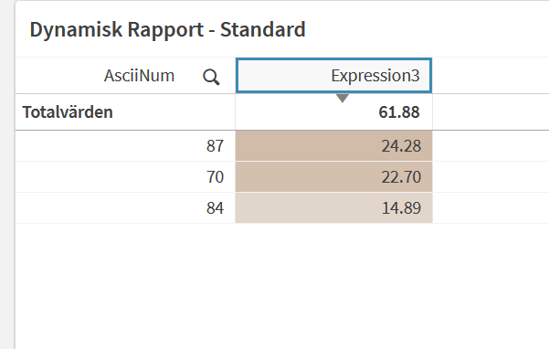

Most people use Qlik variables to store static values — a date, a flag, a reusable expression.
But variables support parameters through $1, $2, and so on, which
turns them into something much more useful: functions you can call with arguments. Once you
understand that, a whole set of patterns opens up. This post shows one of my favourites —
a gradient background color driven entirely by each row's share of the total.
How $1 makes a variable into a function
When you define a variable using $1 as a placeholder, Qlik substitutes it with
whatever argument you pass at call time. Take this simple example:
SET sum = 'rangesum($1, $2)';
Calling $(sum(1,2)) expands to rangesum(1,2) — which evaluates
to 3. The variable becomes a template. The $1 and $2
are just positional slots that get filled in at the point of use.
This works with any expression, not just functions. You can build strings, conditions,
set analysis fragments — anything that benefits from being parameterised. The call syntax
is always the same: $(variableName(arg1, arg2, ...)).
A color variable
Qlik's ARGB() function takes four arguments: alpha (opacity), red, green, blue.
Alpha runs from 0 (fully transparent) to 255 (fully opaque). If we fix the RGB values and
make the alpha a parameter, we have a variable that produces the same color at any opacity
we want:
SET c_color_table = 'ARGB($1, 52, 143, 173)';
Now $(c_color_table(255)) gives full-opacity teal.
$(c_color_table(80)) gives the same teal at roughly a third opacity.
The color is fixed — only the alpha changes.
Wiring it to a measure
The goal is to make the opacity proportional to a row's share of the total — so rows that contribute more get a deeper color. The expression that does this goes into the Background color field of your table column:
$(c_color_table((([Measure] / trim('$(=[Measure])')) * 10) * 40))There are two parts worth unpacking here. First, the ratio:
[Measure]— the value for the current row$(=[Measure])— the overall total of that measure
Dividing them gives a number between 0 and 1 — the row's share of the total.
The trim() wrapper handles any whitespace that can appear in the expansion.
$(=expression) syntax is doing something specific here — it's evaluating
the master measure expression to return an aggregated total rather than the row-level value.
I'll cover exactly how $(=) works in front of a master measure in a
separate post.
How the math produces a gradient
Take a row that accounts for 50% of total sales. Stepping through the expression:
0.50— the proportion (50%)0.50 × 10 = 5— scaled up to a 0–10 range5 × 40 = 200— the alpha value passed to ARGB
That row gets a background of ARGB(200, 52, 143, 173) — a fairly saturated
teal. A row at 25% would produce alpha 100, noticeably lighter. A row at 100% would produce
400, which ARGB clamps to 255 — full opacity.
Controlling sensitivity with the multiplier
The × 40 at the end is the lever that controls how the gradient spreads across
your data. A higher multiplier pushes values to full opacity faster:
-
× 40— a row at 64% of total already reaches alpha 256 (capped at 255). The top half of your values will look nearly identical. Good when you want high-contributing rows to stand out clearly against a pale field. -
× 20— even the top row at 100% only reaches alpha 200. The gradient is spread more evenly across all values, giving a cleaner visual spread when values are close together.
There's no universally correct value — it depends on the distribution of your data and
how much contrast you want. Start with × 40 and adjust based on what your
actual numbers look like.
× 10 in the middle is just a scaling step to give yourself a more
readable working range before applying the final multiplier. You could collapse both
into one multiplier (× 400 instead of × 10 × 40), but keeping
them separate makes it easier to reason about what you're changing.
The result
Applied to a straight table with the background color expression on the measure column, you get a color that deepens with each row's contribution — no conditional coloring rules, no manual thresholds, just a single expression that adapts to whatever data is loaded:

The value 24.28 is roughly 39% of 61.88, giving an alpha of about
157. 14.89 is around 24%, giving alpha 96. The visual difference is immediate
and requires zero manual configuration to maintain — add a new dimension value and it
automatically gets the right shade.
The complete setup
To use this in your own app:
- Create a variable:
SET c_color_table = 'ARGB($1, 52, 143, 173)'; -
In your table column, open the measure's Background color expression field
and enter:
$(c_color_table((([YourMeasure] / trim('$(=[YourMeasure])')) * 10) * 40)) - Swap out the RGB values to match your app's color palette.
- Adjust the final multiplier until the gradient feels right for your data distribution.
The variable lives in one place — change the RGB once and every table using
c_color_table updates automatically. If you later want a warmer color, you
change three numbers instead of hunting down expressions across every sheet.